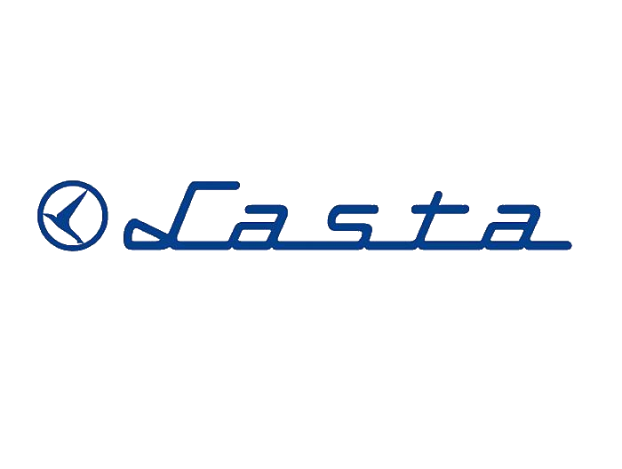
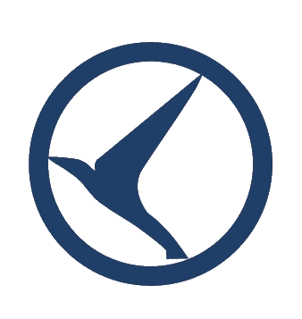

- 
- Pocetna
- O nama
- Kupovina karata
- Red voznje
- Iznajmljivanje vozila
- Medjunarodni transport
- Poslovnice
- Kontakt
SP Lasta je lider u drumskom prevozu putnika u Srbiji i Jugoistočnoj Evropi i jedan od vodećih brendova u našoj zemlji. Postavljanjem visokih standarda u poslovanju i sledeći osnovne vrednosti koje se odnose na sigurnost prevoza, pouzdanost autobusa i kvalitet usluge, ostvarili smo poziciju značajnog i društveno odgovornog partnera. Sa dugom tradicijom, iskusnim osobljem i našom flotom koja danas broji 900 autobusa, godišnje pređemo preko 80 miliona kilometara i prevezemo više od 100 miliona putnika. Svest o socijalnoj odgovornosti kao i prosperitet u poslovanju pruža nam mogućnosti angažovanja u mnogim sportskim, kulturnim, umetničkim i humanitarnim aktivnostima koje su od značaja za celu društvenu zajednicu. Naši planovi usmereni su na dalje širenje kapaciteta, nastavak angažovanja na poslovima vezanim za investiciono održavanje i povećavanje udobnosti i kvaliteta rada u svim segmentima, kao i primenu inovativnih tehnologija, u cilju stalnog poboljšanja kvaliteta usluga našim korisnicima i unapređenja odgovornosti prema svim učesnicima u saobraćaju. Uvek idemo u susret zahtevima i potrebama naših prijatelja, korisnika i tržišta,uvek za radost novih putovanja…
Profil kompanije
Osnovna delatnost Laste je drumski putnički saobraćaj koji se obavlja kroz međunarodni, međugradski, prigradski, gradski, vanlinijski i ugovoreni prevoz, a prateće delatnosti obavljaju se kroz pružanje usluga u turizmu, ugostiteljstvu, trgovini, protektiranju guma, remontu autobusa, servisnim i uslugama tehničkog pregleda. SP Lasta je članica međunarodne organizacije autobuskih prevoznika- EUROLINES. Od 2002. godine u sastavu Laste posluje preduzeće Lastra iz Lazarevca, a od 2010. godine i preduzeća Otisak Putovanje d.o.o iz Splita, kao i Lasta Montenegro d.o.o. Lasta poseduje sertifikate iz oblasti upravljanja kvalitetom QMS – ISO 9001, zaštite životne sredine EMS – ISO 14001, kao i HACCP sistem.
Vizija i misija
Mi doprinosimo ekonomskom napretku Srbije, socijalnom razvoju i razvoju zdravih konkurentskih uslova u javnom transportu, unapređujemo odgovornost prema svojim putnicima i drugim učesnicima u saobraćaju, kroz pružanje usluga drumskog putničkog transporta, servisiranja, turizma, a sve to u okviru efikasnog i pravno regulisanog sistema saobraćaja u Republici Srbiji. Primenom tehničkih i tehnoloških inovacija koja mogu da doprinesu zahtevima zajednice, osiguravamo dobru organizaciju i resurse koji će obezbediti kvalitet usluga našim korisnicima.
Sindikati
Samostalni sindikat
Samostalni sindikat ima najdužu tradiciju i najmasovnije članstvo u Lasti. Organizaciono pokriva ceo sistem sa podružnicama u svim profitnim i poslovnim organizacijama Laste. Z aštitu zaposlenih i unapređenje njihovog standarda ostvaruje putem programa za odmor i rekreaciju u ban jskim lečilištima, planinskim centrima i letovališrima, zatim programima za rešavanje stambenog pitanja, beska matne novčane pozajmice, kupovine robe široke potrošnje na više mesečnih rata, organizacijom sportskih radničk ih igara itd. Prava i interese zaposlenih ovaj sindikat štiti učešćem u radu Upravnog odbora, zatim kao član Sa veza samostalnih sindikata Srbije i kao član veća Republičkog odbora za drumski i gradski saobraćaj.
Asocijacija slobodnih i nezavisnih sindikata
Asocijacija slobodnih i nezavisnih sindikata u Lasti deluje od 1992. godin e. Organizaciono pokriva sve Lastine profitne i poslovne organizacije.Suštinu delovanja čini pružanje pune zaštite zaposlenih u granicama zakonskih prava i unap ređenje standarda zaposlenih kroz programe za odmor i rekreaciju u banjskim lečili štima, planinskim centrima i letovalištima, programima beskamatnih novčanih pozajmi ca, kupovinom robe široke potrošnje na više mesečnih rata, organizacijom sportskih ra dničkih igara. Prava i interese zaposlenih ASNS štiti učešćem u radu Upravnog odbora L aste i kroz članstvo u ASNS Srbije, kao i Granskom sindikatu saobraćajnih i telekom nikacionih preduzeća ASNS Srbija.
SP LASTA BEOGRAD

Autoput Beograd-Nis 4
11000 Beograd
INFO I REZERVACIJE
- 0800 334 334
- +381 11 3348 555
- +381 11 3348 556
- +381 11 3348 557
REKLAMACIJE
- +381 11 4351 231
ODNOSI S JAVNOSCU
- +381 11 4351 512
DIREKCIJA
- +381 11 3402 300
MEDJUNARODNI TRANSPORT
- 0900 334 334


Novak Cojbasic & Njegos Trajkovic. 2019. Sva prava zadrzana